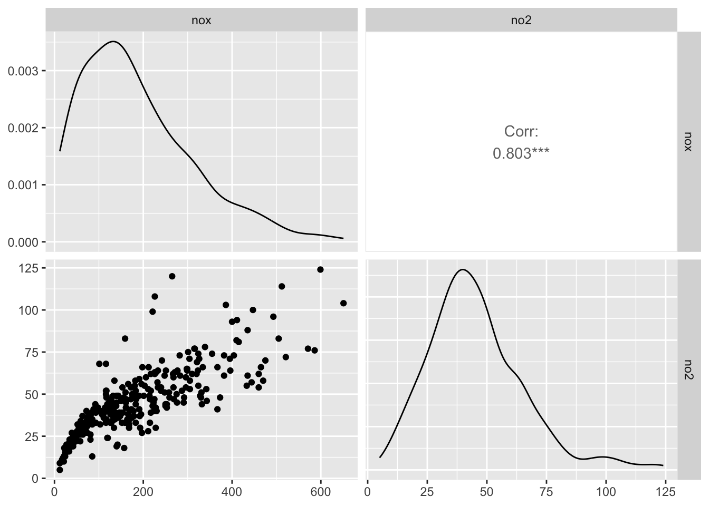
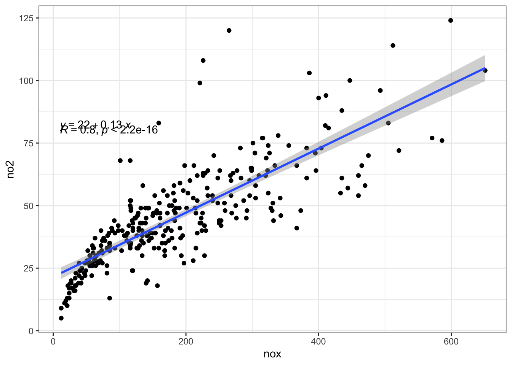
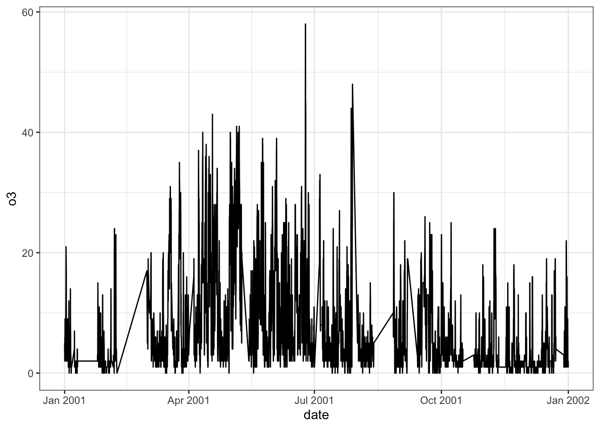
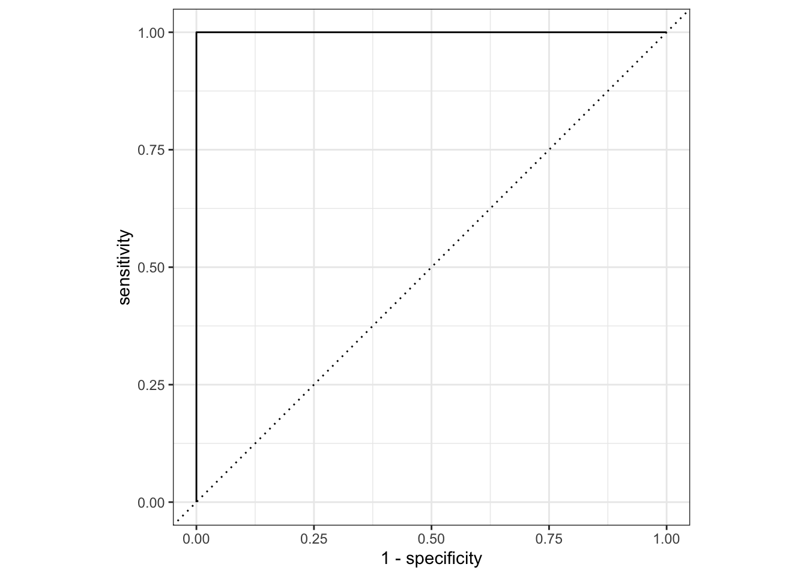

library(tidymodels)
library(recipes)
library(skimr)
library(GGally)
library(openair)
library(ggpubr)
library(glmnet)
tidymodels_prefer()zadanie_2
Wprowadzenie
Cel zadania: Analiza danych dotyczących jakości powietrza z zestawu mydata dostępnego w pakiecie openair. Celem analizy jest przewidzenie, czy stężenie ozonu (O3) było wysokie, czy niskie, przy użyciu modelu klasyfikacji.
Na wstępie muszę przyznać, że duża pomoc w tym kodzie odegrało AI. Było mi bardzo trudno zrozumieć niektóre aspekty analizy, ale z jego pomocą udało mi się coś stworzyć.
Biblioteki
Wczytujemy niezbędne biblioteki potrzebne do przetwarzania danych, wizualizacji i budowy modelu.
Wczytywanie danych
Wczytujemy dane ze zbioru mydata i wybieramy dane dla roku 2001, a następnie sprawdzamy podstawowe statystyki przy pomocy funkcji skim().
air <- mydata |> selectByDate(year = 2001)
air |> skim()| Name | air |
| Number of rows | 8760 |
| Number of columns | 10 |
| _______________________ | |
| Column type frequency: | |
| numeric | 9 |
| POSIXct | 1 |
| ________________________ | |
| Group variables | None |
Variable type: numeric
| skim_variable | n_missing | complete_rate | mean | sd | p0 | p25 | p50 | p75 | p100 | hist |
|---|---|---|---|---|---|---|---|---|---|---|
| ws | 16 | 1.00 | 4.21 | 2.12 | 0.48 | 2.64 | 3.84 | 5.52 | 14.44 | ▇▇▃▁▁ |
| wd | 12 | 1.00 | 204.12 | 98.64 | 0.00 | 140.00 | 220.00 | 280.00 | 360.00 | ▅▃▇▇▆ |
| nox | 539 | 0.94 | 175.32 | 120.33 | 8.00 | 78.00 | 149.00 | 250.00 | 859.00 | ▇▅▁▁▁ |
| no2 | 539 | 0.94 | 43.81 | 18.81 | 3.00 | 30.00 | 41.00 | 55.00 | 143.00 | ▅▇▂▁▁ |
| o3 | 325 | 0.96 | 7.07 | 7.78 | 0.00 | 2.00 | 4.00 | 10.00 | 58.00 | ▇▂▁▁▁ |
| pm10 | 956 | 0.89 | 33.40 | 21.51 | 1.00 | 20.00 | 29.00 | 43.00 | 544.00 | ▇▁▁▁▁ |
| so2 | 1358 | 0.84 | 4.51 | 3.34 | 0.00 | 2.10 | 3.93 | 6.16 | 50.74 | ▇▁▁▁▁ |
| co | 318 | 0.96 | 1.53 | 1.05 | 0.10 | 0.71 | 1.26 | 2.12 | 19.70 | ▇▁▁▁▁ |
| pm25 | 849 | 0.90 | 25.03 | 16.99 | 0.00 | 15.00 | 22.00 | 32.00 | 398.00 | ▇▁▁▁▁ |
Variable type: POSIXct
| skim_variable | n_missing | complete_rate | min | max | median | n_unique |
|---|---|---|---|---|---|---|
| date | 0 | 1 | 2001-01-01 | 2001-12-31 23:00:00 | 2001-07-02 11:30:00 | 8760 |
Usuwamy wiersze z brakującymi wartościami w danych za pomocą funkcji na.omit().
air <- air |> na.omit()Sprawdzamy, ile obserwacji pozostało w danych po usunięciu braków.
n <- nrow(air)
print(n)[1] 5855Korelacja między zmiennymi nox i no2
set.seed(222)
air[sample(1:nrow(air), size = 300, replace = F),] |>
select(nox, no2) |>
ggpairs()
Wykres regresji liniowej
set.seed(222)
air[sample(1:nrow(air), size = 300, replace = F),] |>
select(nox, no2) |>
ggplot(aes(nox, no2)) +
geom_point() +
geom_smooth(method = "lm", se = T, formula = y ~ x) +
stat_cor(label.x = 10, label.y = 80) +
stat_regline_equation(label.x = 10, label.y = 82) +
theme_bw()
Wysoka korelacja ponad 80%.
Analiza stężeń ozonu w czasie
air |>
ggplot(aes(date, o3)) +
geom_line() +
theme_bw()
#Zakres stężeń ozonu
Sprawdzamy minimalne i maksymalne wartości zmiennej o3 w zbiorze danych.
air |>
pull(o3) |>
range() [1] 0 58Klasyfikacja stężeń ozonu
Przekształcamy zmienną ilościową o3 na zmienną jakościową, tworząc dwie kategorie: “Niskie” i “Wysokie” stężenia ozonu. Granicą między nimi jest wartość 10 µg/m³.
air <-
air |>
mutate(ozone = cut(
o3,
breaks = c(-0.1, 10, 58),
labels = c("Niskie", "Wysokie")
))Sprawdzamy, ile obserwacji należy do każdej z kategorii: “Niskie” i “Wysokie”.
air |> count(ozone)# A tibble: 2 × 2
ozone n
<fct> <int>
1 Niskie 4473
2 Wysokie 1382Budowa modelu klasyfikacji
Następnie, możemy przystąpić do budowy modelu regresji logistycznej, który przewidzi, czy stężenie ozonu jest wysokie, czy niskie, na podstawie dostępnych predyktorów.
# Ustawienie ziarna losowości
set.seed(222)
# Podział danych z równomiernym podziałem względem zmiennej 'ozone'
split <- initial_split(air, strata = ozone)
train_data <- training(split)
test_data <- testing(split)
# Budowa przepisu do przetwarzania danych
air_rec <- recipe(ozone ~ ., data = train_data) |>
update_role(date, new_role = "ID") |> # Ustawiamy date jako ID
step_date(date, features = c("month", "dow")) |> # Użyj "dow" zamiast "day_of_week"
step_YeoJohnson(all_numeric_predictors(), -all_outcomes()) |> # Transformacje Yeo-Johnson dla zmiennych nienormalnych
step_dummy(all_nominal_predictors(), one_hot = TRUE) |> # Tworzenie zmiennych fikcyjnych
step_zv(all_predictors()) |> # Usuwanie zmiennych o zerowej wariancji
step_corr(all_numeric_predictors(), threshold = 0.9) # Sprawdź korelacje
# Sprawdzenie przepisu
air_rec |> summary()# A tibble: 11 × 4
variable type role source
<chr> <list> <chr> <chr>
1 date <chr [1]> ID original
2 ws <chr [2]> predictor original
3 wd <chr [2]> predictor original
4 nox <chr [2]> predictor original
5 no2 <chr [2]> predictor original
6 o3 <chr [2]> predictor original
7 pm10 <chr [2]> predictor original
8 so2 <chr [2]> predictor original
9 co <chr [2]> predictor original
10 pm25 <chr [2]> predictor original
11 ozone <chr [3]> outcome originalBudowa modelu regresji logistycznej
# Budowa modelu regresji logistycznej z regularizacją
lr_mod <- logistic_reg(penalty = 0.1, mixture = 1) |> # LASSO
set_engine("glmnet") # Użycie glmnet, który obsługuje regularizację
# Workflow: połączenie przepisu z modelem
logi_work <- workflow() |>
add_model(lr_mod) |>
add_recipe(air_rec)
# Dopasowanie modelu do danych uczących
logi_fit <- logi_work |>
fit(data = train_data)
# Sprawdzenie wyników
summary(logi_fit) Length Class Mode
pre 3 stage_pre list
fit 2 stage_fit list
post 1 stage_post list
trained 1 -none- logicalOcena modelu
# Ocena modelu na zbiorze testowym
pred_test <- augment(logi_fit, test_data) |>
select(ozone, starts_with(".pred"))
# Sprawdzenie struktury pred_test
glimpse(pred_test)Rows: 1,465
Columns: 4
$ ozone <fct> Niskie, Niskie, Niskie, Niskie, Niskie, Niskie, Wysokie,…
$ .pred_class <fct> Niskie, Niskie, Niskie, Niskie, Niskie, Niskie, Niskie, …
$ .pred_Niskie <dbl> 0.9452741, 0.8216706, 0.6903580, 0.6498992, 0.9078770, 0…
$ .pred_Wysokie <dbl> 0.05472588, 0.17832941, 0.30964196, 0.35010080, 0.092122…# Rysowanie krzywej ROC
roc_curve(pred_test, truth = ozone, .pred_Niskie) |>
autoplot()
# Obliczanie AUC
roc_auc(pred_test, truth = ozone, .pred_Niskie)# A tibble: 1 × 3
.metric .estimator .estimate
<chr> <chr> <dbl>
1 roc_auc binary 1Wartość AUC równa 1 oznacza, że model jest w stanie doskonale odróżnić obie klasy, co wskazuje na jego najwyższą skuteczność. Oznacza to, że dla każdego możliwego progu klasyfikacji model prawidłowo klasyfikuje wszystkie przypadki.?
Odpowiedzi na pytania
- Czy zmienne date, wd, pm10, pm25, so2, co wnoszą coś do modelu? Zmienne daty: Mogą wnieść istotne informacje, takie jak sezonowość (np. różnice w poziomach zanieczyszczenia w różnych porach roku) lub trendy czasowe (np. wzrost stężenia ozonu w określonych miesiącach). wd (kierunek wiatru): Może być istotna, ponieważ wpływa na rozprzestrzenianie się zanieczyszczeń. pm10 i pm2.5 (cząstki stałe): Są ważnymi wskaźnikami jakości powietrza i mogą korelować ze stężeniem ozonu. so2 (dwutlenek siarki) i co (tlenek węgla): Mogą również wpływać na jakość powietrza i zdrowie, więc ich uwzględnienie w modelu może być istotne.
- Jakie role przypisać no2 i nox, ponieważ te dwa predyktory są z sobą mocno skorelowane? NO2 (dwutlenek azotu) i NOx (tlenki azotu): Ponieważ te zmienne są ze sobą skorelowane, warto zastanowić się nad ich rolą w modelu. Możesz rozważyć przypisanie jednej z tych zmiennych jako głównego predyktora (np. NO2), a drugą usunąć lub potraktować jako zmienną towarzyszącą. Alternatywnie, można połączyć je w jedną zmienną (np. jako suma lub średnia) lub przeprowadzić analizę głównych składowych (PCA) w celu redukcji wymiarowości.
- Czy stosować przekształcenia Box-Cox lub Yeo-Johnson - dla jakich zmiennych? Przekształcenia Box-Cox: Stosuje się je, gdy zmienne są dodatnie i nie mają wartości ujemnych. Mogą być przydatne dla zmiennych z silnie zróżnicowanym rozkładem, takich jak PM10 i PM2.5. Przekształcenia Yeo-Johnson: Są bardziej elastyczne, ponieważ mogą obsługiwać wartości ujemne i zerowe. To przekształcenie jest przydatne dla zmiennych takich jak NO2, NOx, CO, SO2 i O3, szczególnie jeśli ich rozkład nie jest normalny.
- Czy normalizacja zmiennych numerycznych jest potrzebna? Normalizacja zmiennych numerycznych może być korzystna, szczególnie gdy różne zmienne mają różne skale. Modele takie jak regresja logistyczna mogą być wrażliwe na różnice w skali zmiennych. Normalizacja (np. standaryzacja lub min-max) ułatwi porównywanie wartości.
- Czy wyizolować z date podgrupy, które będą ważnymi predatorami? Tak, warto wyizolować z daty podgrupy, takie jak miesiące, dni tygodnia (dow), czy nawet pory roku, które mogą wpływać na jakość powietrza. Mogą one stanowić istotne predyktory, które pomogą w lepszym modelowaniu zjawisk związanych z jakością powietrza.